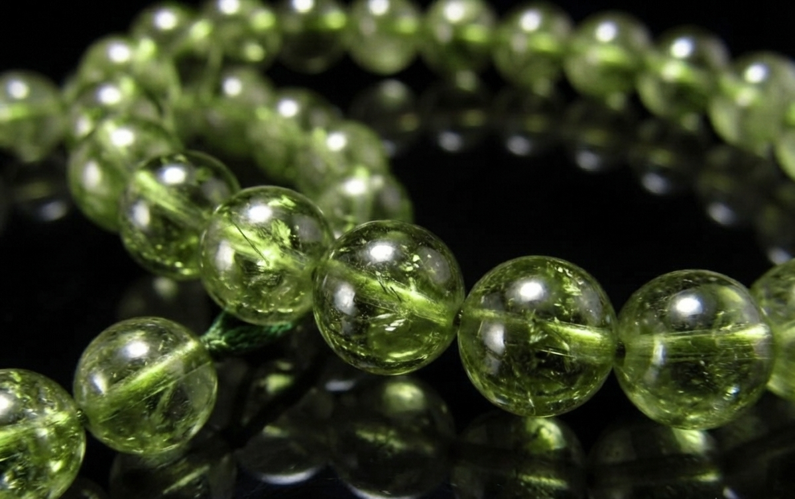
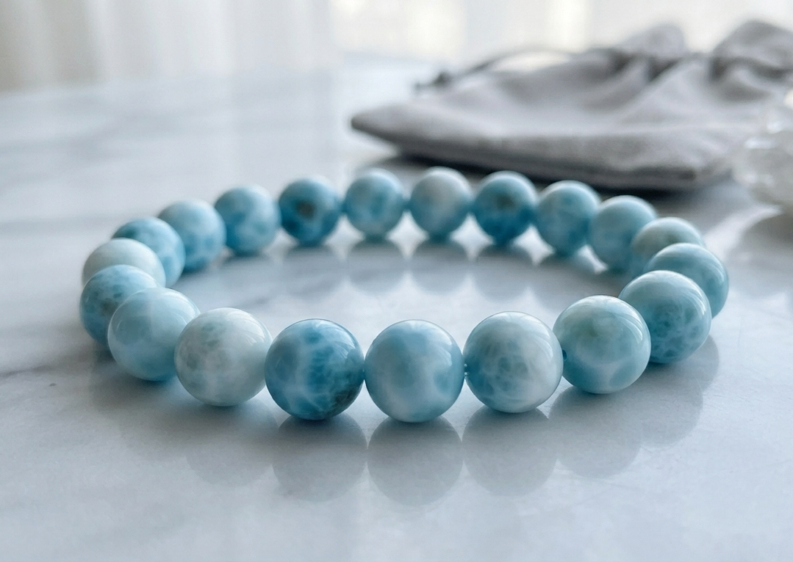

3つのプラン
⭐ おすすめ ⭐
運命を動かすプラン
7月の転機を本気で掴みたい方へ
59,800円





ペリドット
シトリン
ラピスラズリ
ラリマー
スモーキークォーツ
期待できる変化
- 彼から連絡がない時間も
心が波立たず、穏やかに過ごせるようになる - 「もう終わりなのかもしれない」という
答えのない問いが、ふっと静かになる - 彼が今、自分の立場と向き合っている時期であることを
穏やかな気持ちで見守れるようになる - 7月の運命の転機を
最高の状態で迎えられる
特典：月1回のオーラメンテナンス相談（3ヶ月間）、
浄化用水晶クラスター、水晶さざれ

 ※上記5種類の石から里奈様のオーラに合わせて
※上記5種類の石から里奈様のオーラに合わせて
最高のバランスを考えて、1つ、もしくは2つのブレスレットをお届けします
浄化用水晶クラスター、水晶さざれ
最高のバランスを考えて、1つ、もしくは2つのブレスレットをお届けします
流れを整えるプラン
まずは心を安定させたい方へ
29,800円
ペリドット
シトリン
ラピスラズリ
スモーキークォーツ
期待できる変化
- 連絡がない時間に
感情が大きく揺れなくなる - 「もう終わりかも」というループが
ふっと止まる場面が増える - 自分の心の温度を
自分で整えられるようになる
特典：浄化用水晶さざれ
※上記4種類の石から
バランスを考えて、1つ、もしくは2つのブレスレットをお届けします
※上記4種類の石から
バランスを考えて、1つ、もしくは2つのブレスレットをお届けします
日々のお守りプラン
まずは不安を和らげたい方へ
19,800円
ペリドット
シトリン
スモーキークォーツ
期待できる変化
- 夜、彼からの連絡を
何度も確認してしまう時間が短くなる - 「私だけが想っているのかも」という
考えが、ふっと軽くなる
特典：浄化用水晶さざれ
※上記3種類の石から
バランスを考えたブレスレット1本をお届けします
※上記3種類の石から
バランスを考えたブレスレット1本をお届けします